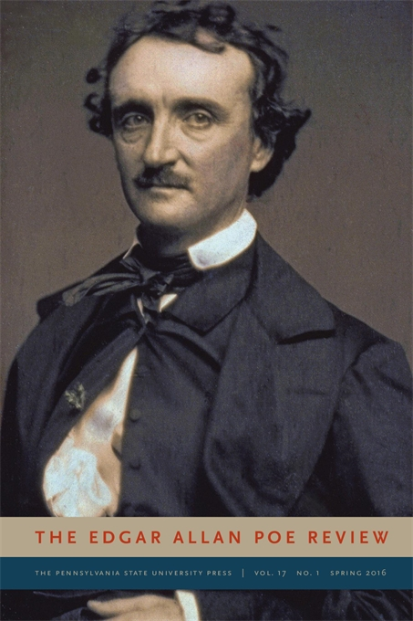

Edgar Allan Poe's stature as a major figure in world literature is primarily based on his ingenious and profound short stories, poems, and critical theories, which established a highly influential rationale for the short form in both poetry and fiction. He is widely regarded as one of the central figures of Romanticism and Gothic fiction in the United States and of early American literature.[1] Poe was one of the country's first successful practitioners of the short story, and is generally considered to be one of the pioneers of the detective fiction genre. In addition, he is credited with contributing significantly to the emergence of science fiction.[2] He is the first well-known American writer to earn a living exclusively through writing, which resulted in a financially difficult life and career.
Poe was born in Boston. He was the second child of actors David and Elizabeth "Eliza" Poe.[4] His father abandoned the family in 1810, and when Eliza died the following year, Poe was taken in by John and Frances Allan of Richmond, Virginia. They never formally adopted him, but he lived with them well into young adulthood. Poe attended the University of Virginia but left after only a year due to a lack of money. He frequently quarreled with John Allan over the funds needed to continue his education as well as his gambling debts.
We want to hear from you. If you have any comments or suggestions you'd like to see on this site please let us know